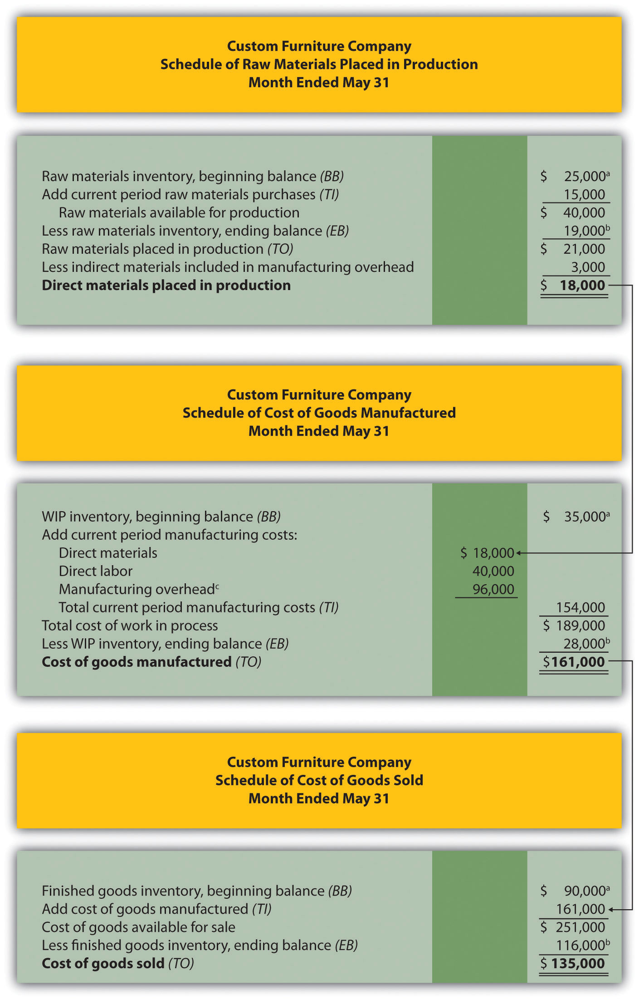
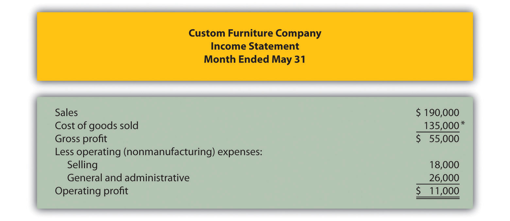
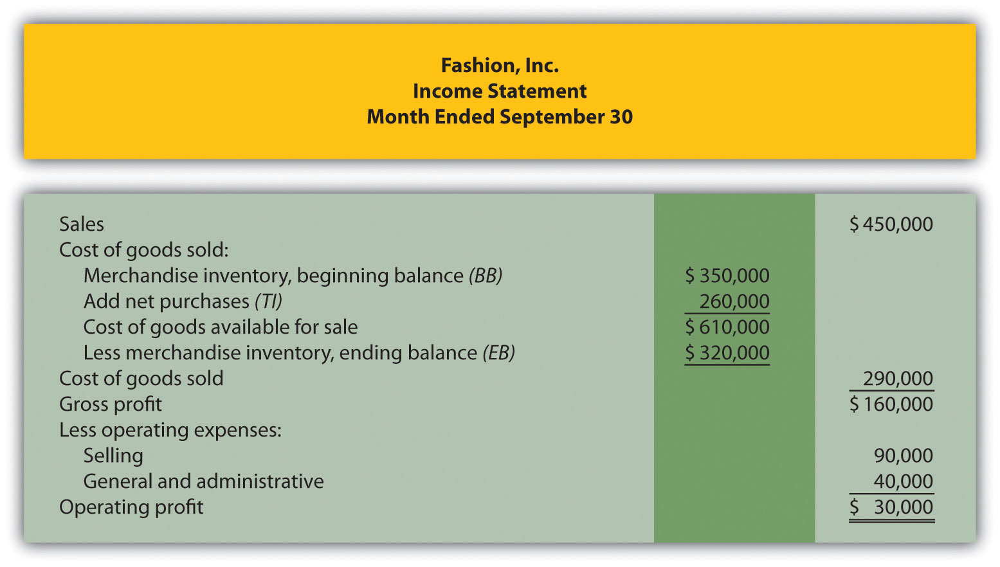

Question: Companies that provide services, such as Ernst & Young (accounting) and Accenture LLP (consulting), do not sell goods and therefore have no inventory. The accounting process and income statement for service companies are relatively simple. Merchandising companies (also called retail companies) like Macy’s and Home Depot buy and sell goods but typically do not manufacture goods. Since merchandising companies must account for the purchase and sale of goods, their accounting systems are more complex than those of service companies. Manufacturing companies, such as Johnson & Johnson and Honda Motor Company, produce and sell goods. Such companies require an accounting system that goes well beyond accounting solely for the purchase and sale of goods. Why are accounting systems more complex for manufacturing companies?
Answer: Accounting systems are more complex for manufacturing companies because they need a system that tracks manufacturing costs throughout the production process to the point at which goods are sold. Since income statements for manufacturing companies tend to be more complex than for service or merchandising companies, we devote this section to income statements for manufacturing companies. Understanding income statements in a manufacturing setting begins with the inventory cost flow equation.
Question: How do companies use the cost flow equation to calculate unknown balances?
Answer: We can use the basic cost flow equation to calculate unknown balances for just about any balance sheet account (e.g., cash, accounts receivable, and inventory). The equation is as follows:
We will apply this equation to the three inventory asset accounts discussed earlier (raw materials, work in process, and finished goods) to calculate the cost of raw materials used in production, cost of goods manufactured, and cost of goods sold.
Raw materials used in production shows the cost of direct and indirect materials placed into the production process. Cost of goods manufactured represents the cost of goods completed and transferred out of work-in-process (WIP) inventory into finished goods inventory. Cost of goods sold represents the cost of goods that are sold and transferred out of finished goods inventory into cost of goods sold.
Accountants need all these amounts—raw materials placed in production, cost of goods manufactured, and cost of goods sold—to prepare an income statement for a manufacturing company. We describe how to calculate these amounts using three formal schedules in the following order:
Question: The basic cost flow equation can be used in three supporting schedules to help us determine the cost of goods sold amount on the income statement for manufacturing companies. What information is included in these schedules, and what do they look like for Custom Furniture Company?
Answer: Figure 1.7 "Income Statement Schedules for Custom Furniture Company" shows these three schedules for Custom Furniture Company for the month of May. As you review these schedules, note that each schedule provides information required for the next schedule, as indicated by the arrows. Remember the inventory cost flow equation is used for each schedule. This is why you see abbreviations for each element of the equation: beginning balance (BB), transfers in (TI), ending balance (EB), and transfers out (TO).
The goal of going through the process shown in Figure 1.7 "Income Statement Schedules for Custom Furniture Company" is to arrive at a cost of goods sold amount, which is presented on the income statement. Custom Furniture Company’s income statement for the month ended May 31 is shown in Figure 1.8 "Income Statement for Custom Furniture Company". As you review Figure 1.7 "Income Statement Schedules for Custom Furniture Company" and Figure 1.8 "Income Statement for Custom Furniture Company", look back at Figure 1.6 "Flow of Product Costs through Balance Sheet and Income Statement Accounts" to see how costs flow through the three inventory accounts and the cost of goods sold account.
In Chapter 2 "How Is Job Costing Used to Track Production Costs?", we provide the detailed information necessary to prepare the schedules and income statement presented in Figure 1.7 "Income Statement Schedules for Custom Furniture Company" and Figure 1.8 "Income Statement for Custom Furniture Company". At this point, your job is to understand how we use the inventory cost flow equation to calculate raw materials placed in production, cost of goods manufactured, and cost of goods sold. (Note: Companies using a perpetual inventory system do not necessarily prepare these formal schedules because perpetual systems update records immediately when inventory is transferred from one inventory account to another. However, these companies take a physical count periodically to ensure the accuracy of inventory accounts and use the cost flow equation and similar schedules to ensure their perpetual system balances are accurate. Note 1.62 "Business in Action 1.8" shows how the cost flow equation can be used to analyze the effects of fraud that was allegedly committed at Rite Aid.)
Figure 1.7 Income Statement Schedules for Custom Furniture Company
a From the company’s balance sheet at April 30 (April 30 ending balance is the same as May 1 beginning balance).
b From the company’s balance sheet at May 31.
c This is actual manufacturing overhead for the period and includes indirect materials, indirect labor, factory rent, factory utilities, and other factory-related expenses for the month. In Chapter 2 "How Is Job Costing Used to Track Production Costs?", we look at an alternative approach to recording manufacturing overhead called normal costing.
Figure 1.8 Income Statement for Custom Furniture Company
*$135,000 comes from the schedule of cost of goods sold in Figure 1.7 "Income Statement Schedules for Custom Furniture Company".
Using the Cost Flow Equation to Analyze Fraud
Rite Aid Corporation operates 3,400 drug stores in the United States. In 2002, the Securities and Exchange Commission (SEC) filed accounting fraud charges against several former executives of Rite Aid. The SEC complaint alleged that Rite Aid had significantly overstated income for several years.
According to the complaint, Rite Aid executives committed financial fraud in several areas, one of which involved inventory. At the end of the company’s fiscal year, the physical inventory count showed $9,000,000 less than Rite Aid’s inventory balance on the books, presumably due to physical deterioration of the goods or theft. Rite Aid executives allegedly failed to record this shrinkage, thereby overstating ending inventory on the balance sheet and understating cost of goods sold on the income statement.
Using the cost flow equation, you can see how failing to record the $9,000,000 loss would understate cost of goods sold.
By failing to record the inventory loss, Rite Aid overstated inventory (an asset) on the balance sheet by $9,000,000 and understated cost of goods sold (an expense) by $9,000,000 on the income statement. This ultimately increased profit by $9,000,000 because reported expenses were too low.
This inventory fraud was a relatively small part of the fraud allegedly committed by Rite Aid executives. In fact, Rite Aid’s net income was restated downward by $1,600,000,000 in 2002. Several former executives pled guilty to conspiracy charges. The former chief executive, Martin Grass, was sentenced to eight years in prison and the former chief financial officer, Franklyn Bergonzi, was sentenced to 28 months in prison. Rite Aid’s stock fell from a high of $50 per share to $5 per share in 2003.
Sources: Securities and Exchange Commission, “Release 2002–92,” news release, http://www.sec.gov; AP wires dated July 10, 2003, and May 27, 2004.
Question: Manufacturing companies clearly have more complex accounting systems to account for all the costs involved in producing products. However, the income statement for a manufacturing company is not all that much different than the income statement for a merchandising company. What are primary differences between manufacturing and merchandising company income statements?
Answer: The primary differences are as follows:
Table 1.5 "Income Statement Terminology in Manufacturing and Merchandising Companies" summarizes the differences in income statement terminology between manufacturing companies and merchandising companies.
Table 1.5 Income Statement Terminology in Manufacturing and Merchandising Companies
| The following terms are used by manufacturing and merchandising companies: sales, cost of goods available for sale, cost of goods sold, operating expenses, selling, general and administrative, and operating profit. | |
| Finished goods inventory is used by manufacturing companies. | Merchandise inventory is used by merchandising companies. |
| Cost of goods manufactured is used by manufacturing companies. | Net purchases is used by merchandising companies. |
Figure 1.9 "Merchandising Company Income Statement for Fashion, Inc." presents an income statement for Fashion, Inc., a retail company that sells clothing. Notice that the schedule of cost of goods manufactured (and related schedule of raw materials placed in production) is not needed for merchandising companies, and the terms merchandise inventory and net purchases are used instead of finished goods inventory and cost of goods manufactured. Also, the schedule of cost of goods sold is simply included in the income statement. Many companies prefer this approach because it means they do not have to prepare a separate schedule.
Figure 1.9 Merchandising Company Income Statement for Fashion, Inc.
Three schedules are necessary to prepare an income statement for a manufacturing company, in the following order:
Fine Cabinets, Inc., produces custom cabinets. The following inventory balances appeared on its balance sheet. (Note that the most current financial information is presented in the first column.)
| December 31, 2012 | December 31, 2011 | |
| Raw materials inventory | $ 8,000 | $ 10,000 |
| Work-in-process inventory | 600,000 | 550,000 |
| Finished goods inventory | 350,000 | 410,000 |
Fine Cabinets had $1,265,000 in sales for the year ended December 31, 2012. The company also had the following costs for the year:
| Selling | $ 90,000 |
| General and administrative | $240,000 |
| Raw materials purchases | $100,000 |
| Direct labor used in production | $125,000 |
| Manufacturing overhead | $630,000 |
Of the total raw materials placed in production for the year, $12,000 was for indirect materials and must be deducted to find direct materials placed in production.
Required:
Prepare the schedules listed in the following for the year ended December 31, 2012. Use the format shown in Figure 1.7 "Income Statement Schedules for Custom Furniture Company". (Note that Figure 1.7 "Income Statement Schedules for Custom Furniture Company" shows information for a month and this review problem presents information for a year.)
Solution to Review Problem 1.8
*$90,000 comes from the direct materials placed in production in part 1a.
*$795,000 comes from the cost of goods manufactured (TO) in part 1b.

*$855,000 comes from the cost of goods sold (TO) in part 1c.
Questions
Which accountant (financial or managerial) would prepare each of the following reports:
Brief Exercises
Finance and Accounting Personnel. Determine whether the chief financial officer, controller, treasurer, internal auditor, managerial accountant, financial accountant, or tax accountant would perform the following tasks. (Hint: Some job titles may be used more than once, and others may not be used at all.)
Manufacturing Cost Terms. Indicate whether each of the following costs associated with production would be classified as direct materials, direct labor, or manufacturing overhead.
Manufacturing Cost Terms. Indicate whether each of the following costs associated with production would be classified as direct materials, direct labor, or manufacturing overhead.
Manufacturing and Nonmanufacturing Cost Terms. Burns Company incurred costs for the following items.
Required:
Manufacturing and Nonmanufacturing Cost Terms. Leighton, Inc., incurred costs for the following items.
Required:
Accounts Used to Record Product Costs. Match each of the following accounts with the appropriate description that follows.
Income Statement Terminology: Manufacturing Versus Merchandising. Match each of the following terms used in a manufacturing company’s income statement with the equivalent term used in a merchandising company’s income statement.
Manufacturing Company
Merchandising Company
Exercises: Set A
Financial Versus Managerial Accounting (Manufacturing). The income statement from Ford’s annual report appears as follows in summary form. (This information was obtained from the company’s Web site, http://www.ford.com.)
Required:
Organizational Structure. The following list of personnel within organizations comes from Figure 1.2 "IMA Statement of Ethical Professional Practice".
Required:
Match each previous item with the most accurate description as follows.
Schedule of Raw Materials Placed in Production. The balance in Sedona Company’s raw materials inventory account was $110,000 at the beginning of September and $135,000 at the end of September. Raw materials purchased during the month totaled $50,000. Sedona used $8,000 in indirect materials for the month.
Required:
Prepare a schedule of raw materials placed in production for the month of September.
Schedule of Cost of Goods Manufactured. The balance in Reid Company’s work-in-process inventory account was $300,000 at the beginning of March and $320,000 at the end of March. Manufacturing costs for the month follow.
| Direct materials (from the schedule of raw materials placed in production) | $ 40,000 |
| Direct labor | $ 70,000 |
| Manufacturing overhead | $200,000 |
Required:
Prepare a schedule of cost of goods manufactured for the month of March.
Schedule of Cost of Goods Sold. The balance in Blue Oak Company’s finished goods inventory account was $25,000 at the beginning of September and $28,000 at the end of September. Cost of goods manufactured for the month totaled $17,000.
Required:
Prepare a schedule of cost of goods sold for the month of September.
Income Statement. Auto Products, Inc., had the following activity for the month of October.
| Sales revenue | $1,100,000 |
| Selling expenses | $ 300,000 |
| General and administrative expenses | $ 230,000 |
| Cost of goods sold | $ 475,000 |
Required:
Prepare an income statement for the month of October.
Exercises: Set B
Financial Versus Managerial Accounting (Merchandising). Home Depot’s annual report appears as follows in summary form. (This information was obtained from the company’s Web site, http://www.homedepot.com.)
Required:
Organizational Structure. The following list of personnel within organizations comes from Figure 1.2 "IMA Statement of Ethical Professional Practice".
Required:
Match each previous item with the most accurate description as follows:
Schedule of Raw Materials Placed in Production. The balance in Clay Company’s raw materials inventory account was $45,000 at the beginning of April and $38,000 at the end of April. Raw materials purchased during the month totaled $55,000. Clay used $14,000 in indirect materials for the month.
Required:
Prepare a schedule of raw materials placed in production for the month of April.
Schedule of Cost of Goods Manufactured. The balance in the work-in-process inventory account of Verdi Production, Inc., was $900,000 at the beginning of May and $750,000 at the end of May. Manufacturing costs for the month follow.
| Direct materials (from the schedule of raw materials placed in production) | $340,000 |
| Direct labor | $810,000 |
| Manufacturing overhead | $660,000 |
Required:
Prepare a schedule of cost of goods manufactured for the month of May.
Schedule of Cost of Goods Sold. The balance in Posada Company’s finished goods inventory account was $650,000 at the beginning of March and $625,000 at the end of March. Cost of goods manufactured for the month totaled $445,000.
Required:
Prepare a schedule of cost of goods sold for the month of March.
Income Statement. Game Products, Inc., had the following activity for the month of June.
| Sales revenue | $800,000 |
| Selling expenses | $100,000 |
| General and administrative expenses | $200,000 |
| Cost of goods sold | $360,000 |
Required:
Prepare an income statement for the month of June.
Problems
Financial Versus Managerial Accounting (Service). The income statement from the annual report of United Parcel Service (UPS) appears as follows in summary form. (This information was obtained from the company’s Web site, http://www.ups.com.)
Required:
Income Statement and Supporting Schedules. The following financial information is for Industrial Company. (Note that the most current financial information is presented in the first column.)
| December 31, 2011 | December 31, 2010 | |
| Raw materials inventory | $ 24,000 | $ 30,000 |
| Work-in-process inventory | 1,800,000 | 1,650,000 |
| Finished goods inventory | 1,050,000 | 1,230,000 |
Of the total raw materials placed in production for the year, $36,000 was for indirect materials. Industrial had $3,795,000 in sales for the year ended December 31, 2011. The company also had the following costs for the year:
| Selling | $ 270,000 |
| General and administrative | $ 720,000 |
| Raw materials purchases | $ 300,000 |
| Direct labor used in production | $ 375,000 |
| Manufacturing overhead | $1,890,000 |
Required:
Income Statement and Supporting Schedules. The following financial information is for Danville Company. (Note that the most current financial information is presented in the first column.)
| December 31, 2011 | December 31, 2010 | |
| Raw materials inventory | $ 8,000 | $ 10,000 |
| Work-in-process inventory | 600,000 | 550,000 |
| Finished goods inventory | 350,000 | 410,000 |
Of the total raw materials placed in production for the year, $12,000 was for indirect materials. Danville had $1,265,000 in sales for the year ended December 31, 2011. The company also had the following costs for the year:
| Selling | $ 90,000 |
| General and administrative | $240,000 |
| Raw materials purchases | $100,000 |
| Direct labor used in production | $125,000 |
| Manufacturing overhead | $630,000 |
Required:
Income Statement and Supporting Schedules. The following information is for Ciena, Inc., for the year ended December 31, 2011.
| Raw materials inventory beginning balance | $ 15,000 |
| Raw materials inventory ending balance | $ 12,000 |
| Work-in-process inventory beginning balance | $ 825,000 |
| Work-in-process inventory ending balance | $ 900,000 |
| Finished goods inventory beginning balance | $ 615,000 |
| Finished goods inventory ending balance | $ 525,000 |
| Raw material purchases | $ 150,000 |
| Direct labor used in production | $ 187,500 |
| Manufacturing overhead | $ 945,000 |
| Selling costs | $ 135,000 |
| General and administrative | $ 360,000 |
| Sales revenue | $1,897,500 |
Of the total raw materials placed in production for the year, $18,000 was for indirect materials.
Required:
Income Statement and Supporting Schedules. The following information is for Diablo, Inc., for the year ended December 31, 2011.
| Raw materials inventory beginning balance | $ 60,000 |
| Raw materials inventory ending balance | $ 48,000 |
| Work-in-process inventory beginning balance | $3,300,000 |
| Work-in-process inventory ending balance | $3,600,000 |
| Finished goods inventory beginning balance | $2,460,000 |
| Finished goods inventory ending balance | $2,100,000 |
| Raw material purchases | $ 600,000 |
| Direct labor used in production | $ 750,000 |
| Manufacturing overhead | $3,780,000 |
| Selling costs | $ 540,000 |
| General and administrative | $1,440,000 |
| Sales revenue | $7,590,000 |
Of the total raw materials placed in production for the year, $72,000 was for indirect materials.
Required:
One Step Further: Skill-Building Cases
Ethics: Accounting for Obsolete Inventory. High Tech, Inc., is a public company that produces laser and ink jet printers. Jorge is an accounting staff member who works for the company’s controller and is involved in preparing the annual report. One of High Tech’s competitors developed a superior color laser jet printer using a less costly production process. Jorge realizes that High Tech’s substantial inventory of color laser jet printers is effectively obsolete and will have to be written down to its net realizable value in accordance with U.S. GAAP. This means higher expenses and lower profits.
Jorge’s boss, the controller, is aware of the situation but the chief financial officer is not. In fact, the controller told the CFO that High Tech does not have any obsolete inventory. Both Jorge’s boss and the CFO receive bonuses tied to the company’s profits. The outside auditors are completing the audit and are unaware of the obsolete inventory.
Required:
How should Jorge handle this situation? Use the IMA’s Statement of Ethical Professional Practice shown in Figure 1.2 "IMA Statement of Ethical Professional Practice" as a guide to answering this question.
Internet Project: Sarbanes-Oxley Act of 2002. Go to the Securities and Exchange Commission’s Web site (http://www.sec.gov) and click on Laws and Regulations. Click on the full text of the Sarbanes-Oxley Act of 2002.
Required:
Comprehensive Case
Ethics: Accounting for Revenues and Expenses. Equipment Group produces excavating equipment for contractors. Equipment Group is working on the annual financial statements for its shareholders, who are expecting profits of $200,000,000 for the year ending December 31. The controller (Jeff) and CFO (Kathy) will receive bonuses totaling 50 percent of their salaries if company profits exceed $200,000,000. Sarah is a staff accountant who works for the controller. One week before the end of the fiscal year, a customer decides to delay a significant purchase of equipment until March of the next year. As a result, Equipment Group’s profits will decrease by $2,000,000 to $198,000,000 for the year.
Jeff, the controller, approaches Sarah and asks her to think of a way to increase profits by $2,500,000. He suggests looking at sales occurring in early January and perhaps moving them up to December. He also hints that some December expenses could be pushed back and recorded in January.
Required: